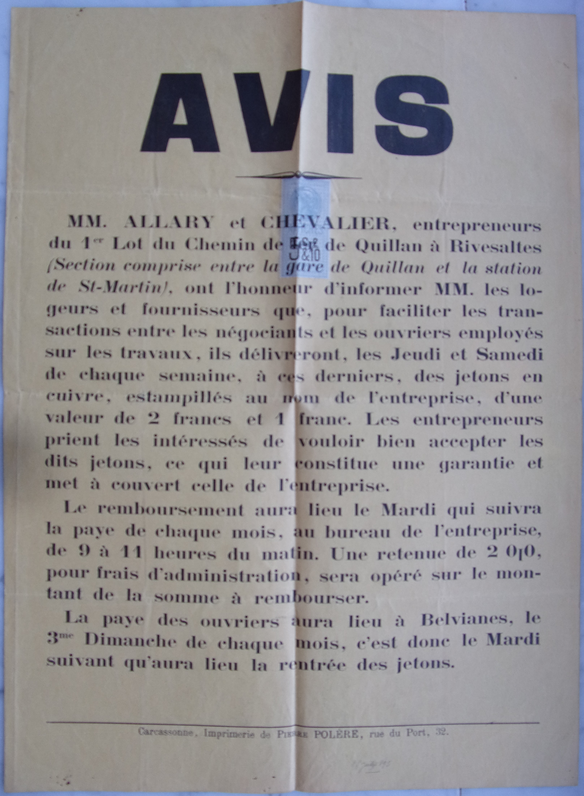

Saint Martin Lys
Voie ferré Quillan - Rivesaltes - lot 1
Grève de septembre 1895 et affaire des jetons
Que de soucis avec ces documents des archives départementales... Après avoir fait la sélection des meilleures photos en double, j'ai eu la bonne idée de supprimer le dossier les contenant de façon définitive - bref les document ci-dessous sont les deuxièmes choix récupérés depuis la corbeille - il ne me restera plus qu'à retourner aux archives pour les photographier une 3ième fois. Normalement il a quasi tous les doc mais ils sont flous...
- Grèves des ouvriers des chantiers de construction de la ligne de chemin de fer Quillan - Rivesaltes - lot 1 du 17 au 27 septembre 1895
- Grèves des ouvriers des chantiers de construction de la ligne de chemin de fer Quillan - Rivesaltes - lot 1 du 17 au 27 septembre 1895
Grèves des ouvriers des chantiers de construction de la ligne de chemin de fer Quillan - Rivesaltes - lot 1 du 17 au 27 septembre 1895
Documents des archives départementales
17 septembre 1895 - Rapport du Commandant d'arrondissement (capitaine Eyma) sur le début de la Grève sur la voie ferrée en construction de Quillan à Rivesaltes

17 septembre 1895 - Télégrammes annonçant le début de la grêve


17 septembre 1895 - Brouillon de courrier du Procureur de la République au procureur général de la cours d'appel de Montpellier sur les causes de la grève


18 septembre 1895 - Rapport du Commandant d'arrondissement sur la grêve sur le chantier de construction de la voie ferrée

18 septembre 1895 - Rapport de la Gendarmerie nationale sur la grève survenue sur les chantiers de la voie ferrée en construction de Quillan à Axat

18 septembre 1895 - Télégrammes sur la grève


19 septembre 1895 - Rapport du Commandant d'arrondissement sur la grêve sur le chantier de construction de la voie ferrée

19 septembre 1895 - Télégrammes sur la grève


20 septembre 1895 - Courrier du Juge de paix au procureur de la république sur la réunion de Concilliation augmentation des salaires ouvriers refusée par entrepreneurs

20 septembre 1895 - Rapport du Juge de paix - Extrait des minutes du greffe - Réunion de Concilliation - augmentation des salaires ouvriers refusée par entrepreneurs


21 septembre 1895 - courrier du procureur général de la cours d'appel de Montpellier au Procureur de la République à propos de la Grève

21 septembre 1895 - Rapport du Commandant d'arrondissement sur la grêve sur le chantier de construction de la voie ferrée

23 septembre 1895 - Télégrammes sur la grève

24 septembre 1895 - Télégrammes sur la grève

26 septembre 1895 - Courrier du procureur général de la cours d'appel de Montpellier au Procureur de la République sur les arrestations suite à la grève


27 septembre 1895 - Télégramme du commandant de la brigade de gendarmerie au procureur de Limoux sur la reprise du travail et arrestation

Revue de presse sur la grève de 18951
19/09/1895
- Le Courrier de l'Aude du 18950919
QUILLAN. - Une grève. - Hier matin, les ouvriers employés à la construction de la ligne du chemin de fer de Quillan à Rivesaltes, se sont mis en grève. Cette grève est motivée, paraît-il, par l'insuffisance des salaires.
- L'Express du Midi
UNE GREVE DE TERRASSIERS
De notre correspondant de Limoux
Limoux, 19 septembre. Les ouvriers terrassiers qui se trouvent sur les chantiers du chemin de fer entre Belvianes et Saint-Martin-Lys; au nombre de cinq cents ouvriers environ, viennent de se mettre en grève.
Mécontents du salaire que leur donne l'entrepreneur, ils ont cessé leurs travaux pour demander une augmentation. La gendarmerie, commandée par le capitaine ainsi que M. le sous-préfet en costume officiel, se trouvent sur les lieux.
Les communications ayant lieu par dépêche, directement avec la préfecture, nous ne pouvons donner de plus amples renseignements. Il résulte, néanmoins, de ceux que nous avons recueillis, nous-même, à la sous-préfecture, que le calme le plus grand n'a cessé de régner parmi les protestataires.
20/09/1895
- Le Courrier de l'Aude du 18950920
LIMOUX. - Grève. - Quatre cents ouvriers environ, travaillant à et confection de la voie ferrée de Quillan a Rivesaltes, se sont déclarés en grève, à, par celà ont suspendu tout travail.
M. le sous-Préfet accompagné de M. Cazanave son secrétaire, et M. le capitaine de gendarmerie, sont partis, mardi soir à huit heures, pour se rendre sur les lieux de la grève.
Hier, un escadron du 17 dragons est arrivé à Quillan. Ces militaires ont été envoyés dans la direction des chantiers de l'entreprise.
Voici les demandes des ouvriers.
1° Suppression de la retenue de 2 % sur les jetons; 2° faire connaitre à l'ouvrier le prix auquel il sera payé trois jours après l'entrée au chantier; 3° augmentation des salaires, savoir : terrassiers à ciel ouvert, 33 à 35 centimes l'heure; dans les tunnels, 35 à 40 centimes; maçons et tailleurs de pierre, 50 à 60 centimes.
Une demande de conciliation et d'arbitrage a été remise à M. le juge de paix de Quillan par les délégués des ouvriers.
Nous donnerons, sous peu, de plus amples détails sur cette grève.
- L'Express du Midi
UNE GRÈVE DE TERRASSIERS
De notre correspondant de Carcassonne:
Les ouvriers employés à la construction de la ligne du chemin de fer de Quillan à Rivesaltes se sont mis en grève dans la journée de mardi.
Les entrepreneurs, MM. Alary et Chevalier ont vainement annoncé l'ouverture des chantiers. Aucun ouvrier ne s'est présenté. Cette grève serait motivée par l'insuffisance des salaires.
Aussitôt prévenu, le sous-préfet de Limoux s'est rendu sur les lieux avec les brigades de gendarmerie de Quillan et de Couiza.
Un peloton du 17° dragons, sous le commandement de M. le lieutenant de Combarieu, est parti, hier matin, de Carcassonne à 4 h. 1/2, en raison de troubles possibles.
- L'Éclair : journal quotidien du Midi
QUILLAN. Une grève. Les ouvriers terrassiers, au nombre de 500 environ, qui travaillent au chemin de fer en construction de Quillan à Rivesaltes, tronçon de Belviannes à Saint-Martin-Lys, s'étant mis en grève contre les entrepreneurs Alary et Chevalier, à propos d'une question de paiement, le sous-préfet de Limoux, le capitaine de gendarmerie avec trois brigades et un peloton de dragons sont sur les lieux, afin d'éviter toute effervescence.
Une demande en conciliation a été adressée au juge de paix ; on attend la décision de ce magistrat.
- Le Soleil
CARCASSONNE
Une grève vient de se déclarer sur les chantiers du chemin de fer de Quillan à Rivesaltes, qui occupent environ 400 [500 pour le "Peuple français"] ouvriers, à la suite d'une réunion où ont été formulées les revendications suivantes :
1 Suppression de la retenue de 2 % sur les jetons ;
2 Faire connaître à l'ouvrier le prix auquel il sera payé trois jours après l'entrée au chantier ;
3 Augmentation des salaires, savoir : terrassier à ciel ouvert, 33 à 35 centimes l'heure ; dans les tunnels, 35 à 40 centimes ; maçons et tailleurs de pierre, 50 à 60 centimes.
Les ouvriers ont remis eux-mêmes au juge de paix de Quillan une demande d'arbitrage.
Un détachement de dragons de Carcassonne s'est transporté sur les lieux pour veiller au maintien de l'ordre.
- Le temps
On nous télégraphie de Carcassonne :
[La suite de l'article = celui de "Le Soleil" ci-dessus]
- Le Peuple français
Le mouvement ouvrier
Les grèves
Carcassonne, 19 septembre.
[La suite de l'article = celui de "Le Soleil" ci-dessus]
- L'Autorité
Les grèves
Carcassonne :
Une grève vient de se déclarer sur les chantiers du chemin de fer de Quillan à Rivesaltes, qui occupent environ 400 ouvriers.
Un détachement de dragons de Carcassonne s'est transporté sur les lieux pour veiller au maintien de l'ordre.
- Le Gaulois : littéraire et politique
Les grèves
Carcassonne. -
[La suite de l'article = celui de "Le Soleil" ci-dessus]
- La Voix du peuple
[même article que celui de l'express du midi du 19 septembre]
21/09/1895
- Le Courrier de l'Aude
LIMOUX. La grève de Quillan. Il nous arrive au moment de mettre sous presse les derniers renseignements sur les ouvriers qui ont suspendu leur travail sur la voie ferrée de Quillan à Rivesaltes.
Les ouvriers n'ont pas encore repris le travail et la grève semble vouloir se prolonger encore.
Les patrons ont fait publier à Quillan que les ouvriers pouvaient reprendre leur travail mais aux mêmes conditions par eux acceptées précédemment.
Les autorités administratives de notre ville sont sur les lieux depuis mardi soir pour mettre d'accord les patrons avec leurs ouvriers.
- L'Express du Midi
UNE GRÈVE DE TERRASSIERS
De notre correspondant de Carcassonne : La préfecture vient d'être avisée du refus formel des entrepreneurs Chevalier et Alary d'entrer en pourparlers avec les ouvriers.
Dans la journée d'hier, une délégation d'ouvriers s'était vendue auprès du juge de paix qui, conformément à la loi, avait fait citer devant lui les entrepreneurs.
MM. Chevalier et Alary n'ont pas répondu à la citation.
En présence de ce refus, les ouvriers ont voté la continuation de la grève à l'unanimité.
Le plus grand calme règne autour des chantiers. Les gendarmes et les dragons qui sont sur les lieux n'ont pas eu encore à intervenir.
- Le Soleil
CARCASSONNE
La tentative de conciliation et d'arbitrage entre les grévistes et les entrepreneurs du chemin de fer de Quillan à Rivesaltes, devant le juge de paix de Quillan, n'a pas abouti, les entrepreneurs ayant déclaré maintenir leurs prix et refusé de désigner des arbitres.
A la suite de l'entrevue devant le juge, une réunion des ouvriers grévistes a eu lieu, au cours de laquelle a été votée la continuation de la grève.
- Le Peuple français
Carcassonne, 20 septembre.
[La suite de l'article = celui de "Le Soleil" ci-dessus]
- La Libre Parole
Les Grèves
Carcassonne, 20 septembre.
[La suite de l'article = celui de "Le Soleil" ci-dessus]
- La Presse
Les Grèves
Carcassonne, 20 septembre.
[La suite de l'article = celui de "Le Soleil" ci-dessus]
- Le Temps
Les Grèves
On nous télégraphie de Carcassonne :
[La suite de l'article = celui de "Le Soleil" ci-dessus]
- L'Autorité
Les grèves
AUDE
[La suite de l'article = celui de "Le Soleil" ci-dessus]
- L'Univers
[Même article que "Le Soleil" du 20/09/1895]
- Le Petit Moniteur universel
[Même article que celui de "Le Soleil" du 20 septembre (ajout simplement de la mention "(Pyrénées-orientales)" après Rivesaltes)]
22/09/1895
- Le Courrier de l'Aude du 18950922
LIMOUX.- La grève des terrassiers. - Dans la journée d'hier, une délégation d'ouvriers s'était rendue auprès du juge de paix qui, conformément à la loi, avait fait citer devant lui les entrepreneurs.
MM. Chevalier et Alary n'ont pas répondu à la citation.
En présence de ce refus, les ouvriers ont voté la continuation de la grève à l'unanimité.
Le plus grand calme règne autour des chantiers.
Les gendarmes et les dragons qui sont sur les lieux n'ont pas eu encore à intervenir.
- L'Express du Midi
UNE GRÈVE DE TERRASSIERS
De notre correspondant de Carcassonne :
Le sous-préfet de Limoux se tient en permanence à la mairie de Quillan.
Il a fait appeler, hier, les entrepreneurs Chevalier et Alary qui ont consenti à une légère augmentation de salaire.
Cette augmentation n'a pas parue suffisante aux ouvriers.
La grève continue donc, mais tout fait prévoir qu'avant peu de jours un arrangement interviendra.
- La Voix du peuple : organe de l'Union conservatrice du Gers
UNE GRÈVE DE TERRASSIERS
De notre correspondant de Carcassonne:
La préfecture vient d'être avisée du refus formel des entrepreneurs Chevalier et Alary d'entrer en pourparlers avec les ouvriers.
Dans la journée d'hier, une délégation d'ouvriers s'était rendue auprès du juge de paix qui, conformément à la loi, avait fait citer devant lui les entrepreneurs.
MM. Chevalier et Alary n'ont pas répondu à la citation.
En présence de ce refus, les ouvriers ont voté la continuation de la grève à l'unanimité.
Le plus grand calme règne autour des chantiers. Les gendarmes et les dragons qui sont sur les lieux n'ont pas eu encore à intervenir.
- Le Radical
Une grève de terrassiers
[Même article que "Le Soleil" du 20/09/1895]
Le contraire eût étonné. Les ouvriers demandent du pain, on leur envoie des dragons.
- La Marseillaise : journal politique quotidien
[Même article que celui du Radical ci-dessus]
- Le Petit Caporal
Les ouvriers grévistes des chantiers du chemin de fer de Quillan à Rivesaltes ont refusé les offres d'augmentation de salaires faites par les entrepreneurs, les jugeant insuffisantes. La grève continue.
23/09/1895
- Le Soleil
CARCASSONNE
Les ouvriers grévistes des chantiers du chemin de fer de Quillan à Rivesalte ont refusé les offres d'augmentation de salaires faites par les entrepreneurs, les jugeant insuffisantes. La grève continue.
- Le Soir
LES GRÈVES DE CARCASSONNE
Les ouvriers grévistes des chantiers du chemin de fer de Quillan à Rivesaltes ont refusé les offres d'augmentation de salaires faites par les entrepreneurs, les jugeant insuffisantes. La grève continue.
- Il Pensiero di Nizza
[texte original]Operai in isciopero.
Parigi, 22 settembre (sera).
Gli operai scioperanti delle officine della strada di Quillan a Rivesaltes hanno rifiutato le offerte d'aumento di salario fatte dagli impresarii, giudicandole insufficienti. Lo sciopero continua.
[traduction]Ouvriers en grève.
Paris, 22 septembre (soir).
Les grévistes des ateliers de la route du Quillan à Rivesaltes ont rejeté les offres d'augmentation salariale faites par le patronat, les jugeant insuffisantes. La grève continue.
- L'Autorité
[Même article que celui du "Le Soir"]
- Le Temps
Les grèves
On nous télégraphie de Carcassonne :
[Même article que celui du "Le Soir" pour la suite]
- Journal des débats politiques et littéraires
Carcassonne, le 22 septembre.
[Même article que celui du "Le Soir" pour la suite]
- Le Peuple français
Mouvement ouvrier
Les grèves
Carcassonne, le 22 septembre.
[Même article que celui du "Le Soir" pour la suite]
24/09/1895
- Le Courrier de l'Aude du 18950924
QUILLAN. - Hier matin a eu lieu la réunion des grevistes et des entrepreneurs. Ces derniers ont offert une augmentation de salaires aux ouvriers qui maintiennent quand même la grève.
Pas d'incidents; tout est calme.
- L'Express du Midi
Une Grève de Terrassiers
De notre correspondant de Carcassonne :
Hier soir, à 4 heures, sur un ordre de la préfecture transmis au commandant de place, un nouveau détachement du 17 dragons, sous le commandement de M. le lieutenant de Viviès, est parti pour Quillan.
On craint des troubles.
- Le Roussillon : journal politique
La Grève des Ouvriers de la ligne de Quillan à Rivesaltes
La journée de dimanche, dit le Petit Méridional, s'est passée sans incidents. MM. Allary et Chevalier, entrepreneurs, ne sont pas du tout disposés à augmenter les salaires. Une réunion d'ouvriers a eu lieu à Saint-Martin-Lys. Cette réunion avait pour but de secourir les terrassiers besogneux.
Une brigade de gendarmerie surveillait les agissements des grévistes. Une trentaine de terrassiers, embauchés par un entrepreneur étranger, sont arrivés à Limoux par le train de 6 heures. Des espagnols vont se transporter à Quillan. Le recrutement des ouvriers terrassiers pour remplacer les absents sera très laborieux.
MM. le sous-préfet, les maires et adjoints de Quillan et Saint-Martin-Lys et le capitaine de gendarmerie sont toujours sur les lieux pour maintenir l'ordre.
Lundi à 5 heures, 30 ouvriers logés à Quillan ont repris le travail; 300 grévistes, venus de Belvianes, Saint-Martin et Axat, voulaient les en empêcher; mais, grâce aux conseils de M. Ramonet, sous-préfet, et à l'énergie de M. le capitaine de gendarmerie Eyma et de M. Combarrieu, lieutenant de dragons, ils se sont dispersés. Quelques-uns des grévistes ont gagné Quillan, par la montagne, mais ils sont restés calmes.
Toute la journée le sous-préfet accompagné de l'officier ci-dessus nommé a parcouru les chantiers engageant les grévistes au calme et à la conciliation, il a même amené les grévistes à accepter les chiffres de 0.28 à 32 centimes l'heure au lieu de 0.30 à 0.35 qu'ils demandaient.
Malheureusement, ils n'ont pas réussi malgré leur effort à fléchir les entrepreneurs, alors la grève a été décidée plus catégoriquement et en prévision de troubles, M. le sous-préfet a demandé un deuxième peloton de dragons qui est arrivé à Quillan par le train de 7 h. du soir.
Lorsque le détachement du 143e de ligne qui allait de Couiza à Axat est passé à Belvianes, le sous-préfet a obtenu du commandant de faire halte en cas de besoin.
- Le Petit Moniteur universel
Une grève
RIVESALTES, 23 septembre . - [Même article que celui du "Le Soir" du 23 septembre]
- La Lanterne : journal politique quotidien
En province
Carcassonne. - [Même article que celui du "Le Soir" du 23 septembre]
25/09/1895
- Le Courrier de l'Aude
QUILLAN.- La grève. - Hier, dans l'après-midi, un nouveau peloton du 17e dragons est parti pour Quillan, sur la demande de M. le sous-préfet de Limoux.
Une trentaine d'ouvriers ont accepté une légère augmentation de prix et ont repris le travail ; les autres continuent la grève.
Aujourd'hui, une entrevue des ingénieurs et des entrepreneurs doit avoir lieu à Belvianes. On suppose que dans cette entrevue la solution de la crise sera menée.
- Le Petit Moniteur universel
Une grève
RIVESALTES, 24 septembre. Les entrepreneurs des chemins de fer de Quillan à Rivesaltes, ayant consenti une augmentation d'un centime par heure en faveur des ouvriers qui gagnaient 29 centimes par heure, et de 2 centimes en faveur de ceux qui en gagnaient 20, une partie des grévistes a repris le travail dans le premier chantier. Une discussion s'est alors élevée entre eux et les ouvriers des autres chantiers, partisans de la continuation de la grève. Grâce à l'intervention de la gendarmerie et des dragons, l'ordre a été vite rétabli sans incident.
- Le Petit Caporal
La grève des terrassiers
[même article que "Le Petit Moniteur universel" pour la suite]
- Le Temps
Les grèves
On nous télégraphie de Carcassonne :
[même article que "Le Petit Moniteur universel" pour la suite]
- Journal des débats politiques et littéraires
Carcassonne, le 24 septembre
[même article que "Le Petit Moniteur universel" pour la suite]
- Le Peuple français
Mouvement ouvrier
Les grèves
Carcassonne, le 24 septembre
[même article que "Le Petit Moniteur universel" pour la suite]
26/09/1895
- Le Courrier de l'Aude
QUILLAN.- La Grève - Hier deux cents ouvriers environ ont repris le travail. Des grévistes qui faisaient rouler des pierres sur les ouvriers qui travaillaient au chantier de la Pierre-Lys ont été arrêtés et dirigés sur Quillan où M. le juge d'instruction instruit l'affaire.
On écrit de Belvianes que lundi dernier les grévistes se rendaient en grand nombre à Quillan, et qu'ils ont été sommés par la force armée d'avoir à revenir en arrière. Ce n'est qu'à deux heures du soir que l'ordre a été donné de laisser circuler les grévistes par groupes de deux et à un quart d'heure de distance les uns des autres. A quatre heures une réunion était tenue à Quillan, pour la nomination d'un délégué et désigner un bureau chargé de recueillir les souscriptions et distribuer les secours.
- L'Express du Midi
Une Grève de Terrassiers
De notre correspondant de Limoux :
Les grévistes commencent à donner de l'inquiétude aux autorités, Ainsi mardi, M. Rives, faisant fonction de procureur de la République, arrivé sur le chantier de Belviane, où vingt-cinq des protestataires avaient repris le travail, fut obligé de faire arrêter trois des travailleurs récalcitrants, qui voulaient s'opposer à la reprise des travaux effectués par leurs camarades, en leur lançant des pierres des hautes montagnes de la Pierre-Lys.
Cette attitude énergique a fait renaître le calme dans les rangs des ouvriers qui boudent encore à leur entrepreneur.
- Le Petit Marseillais
Arrestation de Grévistes
Carcassonne, 25 septembre.- Deux cents ouvriers sur quatre cents ont repris le travail sur les chantiers du chemin de fer de Quillan à Rivesaltes ; Deux grévistes qui faisaient rouler des pierres sur les travailleurs du chantier de la Pierrelys ont été arrêtés. - A.
- Le Soleil
CARCASSONNE
Deux cents ouvriers sur quatre cents ont repris le travail sur les chantiers du chemin de fer de Quillan à Rivesaltes. Deux grévistes qui faisaient rouler des pierres sur les travailleurs du chantier de la Pierrelys ont été arrêtés.
- Le Petit Caporal
Les terrassiers de Carcassonne
[Même article que "Le Soleil" pour la suite]
- Le Peuple français
Carcassonne, 25 septembre
[Même article que "Le Soleil" pour la suite]
- La Libre Parole
Les manoeuvres de Carcassonne
[Même article que "Le Soleil" pour la suite]
- Le Temps
On nous télégraphie de Carcassonne :
[Même article que "Le Soleil" pour la suite]
- Le Gaulois : littéraire et politique
[Même article que "Le Soleil"]
- L'Étendard
La grève des terrassiers
[même article que "Le Petit Moniteur universel" du 25 septembre pour la suite]
- La Gironde
On télégraphie de Carcassonne :
[même article que "Le Petit Moniteur universel" du 25 septembre pour la suite]
- Le Libéral
La grève des terrassiers
[même article que "Le Petit Moniteur universel" du 25 septembre pour la suite]
- Le Pays : journal des volontés de la France
La grève des terrassiers
[même article que "Le Petit Moniteur universel" du 25 septembre pour la suite]
- Les Travaux officiels : moniteur des adjudications
Les grèves. - Une grève vient de se déclarer sur les chantiers du chemin de fer de Quillan à Rivesaltes, qui occupent environ 400 ouvriers, à la suite d'une réunion où ont été formulées les revendications suivantes :
1 Suppression de la retenue de 2 % sur les jetons ;
2 Faire connaître à l'ouvrier le prix auquel il sera payé trois jours après l'entrée au chantier ;
3 Augmentation des salaires, savoir : terrassier à ciel ouvert, 33 à 35 centimes l'heure ; dans les tunnels, 35 à 40 centimes ; maçons et tailleurs de pierre, 50 à 60 centimes.
Une tentative de conciliation et d'arbitrage entre les grévistes et les entrepreneurs, devant le juge de paix de Quillan, n'a pas abouti, les entrepreneurs ayant déclaré maintenir leurs prix et refusé de désigner des arbitres.
A la suite de cette entrevue, une réunion des ouvriers grévistes a eu lieu, au cours de laquelle a été votée la continuation de la grève.
27/09/1895
- Le Petit Marseillais
LES GRÈVES Quillan (Aude), 26 septembre. La situation se corse et des malheurs sont à redouter. Deux cents ouvriers ont repris le travail. Des grévistes ont fait rouler sur les travailleurs d’énormes quartiers de roc du haut de la Pierre-Lys. Personne n’a été blessé mais deux grévistes ont été arrêtés.
Un certain nombre de grévistes se rendant de Belvianes à Quillan ont été sommés de se disperser. Comme ils refusaient d obéir à la sommation, des coups de feu ont été tirés par la troupe pour les intimider.
Le sous-préfet, pour éviter des troubles, leur a permis de continuer leur route, mais deux par deux et à un quart d’heure d’intervalle.
Une réunion s'est tenue, hier soir, à Quillan, pour la nomination d’un délégué et la désignation d’un bureau chargé de recueillir les souscriptions et distribuer les secours. - S.
- La Lanterne : journal politique quotidien
Carcassonne, 25 septembre
[Même article que "Le Soleil" du 26 septembre pour la suite]
- L'Union libérale
LES GREVES
UNE GREVE DE TERRASSIERS
La grève des ouvriers terrassiers employés à la ligne de Quillan à Rivesaltes continue.
Hier, plusieurs ouvriers qui avaient repris le travail ont été attaqués à coups de pierres par les grévistes.
Deux de ces derniers ont été arrêtés sur l'ordre du parquet de Limoux, qui se tenait sur les lieux presque en permanence.
La gendarmerie et les dragons ont reçu des ordres sévères dans le but d'éviter de nouveaux troubles.
28/09/1895
- Le Courrier de l'Aude du 18950928
QUILLAN. - Fin de la grève.
La grève des ouvriers occupés à la construction du premier lot de la ligue de Quillan à Rivesaltes est enfin terminée.
Les entrepreneurs ayant consenti une légère augmentation, le travail a été immédiatement repris sur tous les chantiers excepté sur celui de Nebias.
Les deux pelotons de dragons sont partis dans la soirée pour Limoux où ils feront étape.
- L'Express du Midi
Fin de la Grève de Terrassiers
De notre correspondant de Limoux :
Les ouvriers terrassiers qui se trouvaient sur les chantiers de Belvianes et de Saint-Martin-Lys ont repris leurs travaux, presque en totalité, sur la promesse qui leur a été faite par l'entrepreneur d'augmenter leurs salaires de deux centimes par heure. Quelques mécontents, au nombre de vingt-cinq environ, trouvant cette augmentation dérisoire, n'ont pas voulu souscrire à cette condition qu'ils ne trouvent point suffisante pour les aider à vivre, dans un pays où les logements et les denrées alimentaires sont horriblement chers.
Sur les trois meneurs qui avaient été arrêtés, un seul a été écroué à la maison d'arrêt de notre ville. Les hommes du 17e dragons, arrivés de Quillan jeudi soir, sont repartis vendredi à 5 heures du matin pour rejoindre leur régiment à Carcassonne. Il n'y a plus sur les lieux pour maintenir l'ordre, en cas de nouveaux troubles, que quelques gendarmes sous le commandement d'un maréchal-des-logis.
- L'Éclair : journal quotidien du Midi
Retour des dragons. Ce matin, rentreront ici les deux pelotons de dragons commandés par MM. de Viviès et de Combarieu, envoyés à Quillan à l'occasion de la grève des terrassiers.
Celle-ci est terminée, les entrepreneurs ayant accordé une légère augmentation.
- Journal général de l'Algérie et de la Tunisie
Informations
[Même article que "Le Soleil" du 21 septembre pour la suite...]
29/09/1895
- L'Express du Midi
De retour - Les deux pelotons du 17e dragons qui avaient été envoyés à Quillan pour tenir en respect les ouvriers terrassiers en grève, sont rentrés hier à Carcassonne
03/10/1895
Autre
- Statistique des grèves et des recours à la conciliation et à l'arbitrage survenus pendant l'année 1895 / Ministère du commerce, de l'industrie, des postes et des télégraphes, Office du travail
LXVII (389). — Grève de terrassiers et maçons à Quillan.
17-26 SEPTEMBRE.
Demande d'augmentation de salaires. — Recours des ouvriers au juge de paix le 17 septembre. — Réunion du comité de conciliation le 19. — Les patrons refusent l'arbitrage.— .La grève continue. — Transaction.
Le 17 septembre, les ouvriers terrassiers, carriers et maçons employés à la construction d'une ligne de chemin de fer de Quillan (Aude) à Rivesaltes (Pyrénées-Orientales) se mirent en grève au nombre de 450, dans les chantiers situés sur les communes de Quillan, Belvianes, Saint-Martin-Lys et Nébias.
D'après la lettre adressée le même jour au juge de paix de Quillan, ils demandaient :
Pour les ouvriers terrassiers travaillant à ciel ouvert, 33 centimes à 35 centimes l'heure; et pour le travail dans les tunnels, 35 centimes à 40 centimes l'heure; Pour les maçons et les tailleurs de pierres, 50 centimes et 60 centimes l'heure.
Devant le comité de conciliation, réuni le 19 septembre, les deux patrons associés répondirent à la demande que, jusqu'alors, ils avaient payé les ouvriers selon leur mérite, 24 centimes à 30 centimes l'heure pour les terrassiers et 40 centimes et 50 centimes pour les maçons et les tailleurs de pierres, et qu'ils ne pouvaient pas leur accorder davantage.
Invités par le juge de paix à recourir à l'arbitrage, les ouvriers acceptèrent et désignèrent immédiatement deux arbitres, l'un pour les terrassiers, l'autre pour les maçons; mais les patrons refusèrent d'en faire autant et ne voulurent même pas signer le procès-verbal de la séance.
Outre la question d'augmentation de salaire, le différend portait encore sur le système de jetons donnés en acomptes aux ouvriers. Lorsque les fournisseurs des ouvriers présentaient ces jetons aux entrepreneurs, ceux-ci leur faisaient une retenue de 2 p. 100; à leur tour, les fournisseurs n'acceptaient les jetons des ouvriers qu'en leur faisant subir une dépréciation de 5 p. 100.
Le 21 septembre, les entrepreneurs firent afficher la suppression de la retenue sur les jetons et une augmentation de 1 centime à 3 centimes par heure.
Cette concession fit reprendre le travail le lendemain à une vingtaine d'ouvriers; le 24, le nombre des travaillants s'éleva à 150 et le 26 la reprise était générale.
Affaires de jetons données comme avance sur salaire par les entrepreneurs (monnaie de cayenne...)
Affiche informant sur les jetons

Ces jetons seront à l'origine de la grève de septembre 1895 car entrainent une réduction de salaire de 2% sans compter que les commerçants ne les prennent que pour 90% de leur valeur faciale.
Suite à la grève, la question des jetons va interroger la justice. Les pièces qui suivent sont les échanges liés à l'enquête menèe.
01 octobre 1895 - Courrier du procureur général de la cours d'appel de Montpellier au procureur de la république relatif à l'affaire des jetons

03 octobre 1895 - Courrier de la gendarmerie nationale au procureur de la République sur l'affaire des jetons

26 octobre 1895 - Courrier du procureur général de la cours d'appel de Montpellier au procureur de la République sur l'affaire des jetons


06 novembre 1895 - Courrier du procureur général de la cours d'appel de Montpellier au procureur de la République sur l'affaire des jetons


11 novembre 1895 - Courrier du procureur de la République au juge de paix sur l'affaire des jetons


19 novembre 1895 - Courrier du juge de paix au procureur de la République sur l'affaire des jetons


23 novembre 1895 - Courrier de l'entrepreneur Jean Chevalier au juge de Paix sur l'affaire des jetons

23 novembre 1895 - Courrier du juge de paix au procureur de la République sur l'affaire des jetons
26 novembre 1895 - Courrier de l'entrepreneur Jean Chevalier au juge de Paix sur l'affaire des jetons

28 novembre 1895 - Brouillon de courrier du procureur de la République sur l'affaire des jetons

27 janvier 1896 - Courrier du procureur général de la cours d'appel de Montpellier au procureur de la République sur l'affaire des jetons


18 février 1896 - Brouillon de courrier au procureur de la République sur l'affaire des jetons


02 mai 1896 - Brouillon de courrier au procureur de la République sur l'affaire des jetons

janvier 1897 - 2 Brouillons de courrier du procureur de la République de Limoux sur l'affaire des jetons


Revue de presse sur l'affaire des jetons1
1895-12-22
- La souveraineté nationale
Des entrepreneurs malins-On écrit de Carcassonne :
Les négociants de Quillan, Belvianes, Saint-Martin-Lys et Axat, arrondissement de Limoux, viennent d’adresser au ministre des finances une protestation contre l’usage d’une monnaie nouvelle et illégale, désignée dans le pays sous le nom de « monnaie de Cayenne », introduite par les entrepreneurs du chemin de fer de Quillan à Rivesaltes.
Ceux ci, au début de leur entreprise adjugée il y a quelques mois, annoncèrent, par voie d'affiche, que pour faciliter les transactions entre logeurs, commerçants et ouvriers, ils mettraient en circulation une certaine quantité de jetons de différentes formes et valeurs qui seraient repris et payés à leurs porteurs par la caisse de l’entreprise le mardi qui suivrait le jour de la paye des ouvriers. Quelques remboursements furent d’abord effectués, mais, depuis plusieurs semaines, les entrepreneurs ont cessé de tenir leurs engagement.
Deux cents négociants de la région réunis à Belvianes, ont décidé de mettre le ministre au courant de la situation et de lui faire parvenir sous pli recommandé un échantillon des jetons distribués.
- Le petit caporal
DANS LES DEPARTEMENTS Des entrepreneurs malins. — On écrit de Carcassonne :
Les négociants de Quillan, Belvianes, Saint-Martin-Lys et Axat, arrondissement de Limoux, viennent d’adresser au ministre des finances une protestation contre l’usage d’une monnaie nouvelle et illégale, désignée dans le pays sous le nom de « monnaie de Cayenne», introduite par les entrepreneurs du chemin de fer de Quillan à Rivesaltes. Ceux-ci, au début de leur entreprise adjugée il y a quelques mois, annoncèrent, par voie d'affiche, que pour faciliter les transactions entre logeurs, commerçants et ouvriers, ils mettraient en circulation une certaine quantité de jetons de différentes formes et valeurs qui seraient repris et payés à leurs porteurs par la caisse de l’entreprise le mardi qui suivrait le jour de la paye des ouvriers. Quelques remboursements furent d’abord effectués, mais, depuis plusieurs semaines, les entrepreneurs ont cessé de tenir leurs engagements. Deux cents négociants de la région réunis à Belvianes, ont décidé de mettre le ministre au courant de la situation et de lui faire parvenir sous pli recommandé un échantillon des jetons distribués.
- Le temps
On nous télégraphie de Carcassonne
Les négociants de Quillan, Belvianes, Saint-Martin, Lys et Axat, arrondissement de Limoux, viennent d'adresser au ministre des finances une protestation contre l'usage d'une monnaie nouvelle et illégale, désignée dans le pays sous le nom de « monnaie de Cayenne », introduite par les entrepreneurs du chemin de fer de Quillan à Rivesaltes. Ceux-ci, au début de leur entreprise adjugée il y a quelques mois, annoncèrent, par voie d'affiche, que, pour faciliter les transactions entre logeurs, commerçants et ouvriers, ils mettraient en circulation une certaine quantité de jetons de différentes formes et valeurs qui seraient repris et payés à leurs porteurs par la caisse de l'entreprise le mardi qui suivrait le jour de la paye des ouvriers. Quelques remboursements furent d'abord effectués, mais, depuis plusieurs semaines, les entrepreneurs ont cessé de tenir leurs engagements.
Deux cents négociants de la région, réunis à Belvianes, ont décidé de mettre le ministre au courant de la situation et de lui faire parvenir sous pli recommandé un échantillon des jetons distribués.
- Le matin
LA « MONNAIE DE CAYENNE »
Carcassonne, 21 décembre.- D'un correspondant. Les négociants de Quillan, Belvianes, Saint-Martin, Lyx et Axât, arrondissement de Limoux, viennent d'adresser au ministre des finances une protestation contre l'usage d'une monnaie nouvelle et illégale, désignée dans le pays sous le nom de « monnaie de Cayenne », introduite par les entrepreneurs du chemin de fer de Quillan à Rivesaltes.
Ceux-ci, au défaut de leur entreprise adjugée il y a quelques mois, annoncèrent, par voie d'affiche, que, pour faciliter les transactions entre logeurs, commerçants et ouvriers, ils mettraient en circulation une certaine quantité de jetons de différentes formes et valeurs qui seraient repris et payés à leurs porteurs par la caisse de l'entreprise le mardi qui suivrait le jour de la paye des ouvriers.
Quelques remboursements furent d'abord effectues, mais depuis plusieurs semaines les entrepreneurs ont cessé de tenir leurs engagements.
Deux cents négociants de la région, réunis a Belvianes, out décidé de mettre le ministre au courant de la situation et de lui faire parvenir sous pli recommandé un échantillon des jetons distribués.
- Le Petit moniteur universel
Une monnaie illégale Carcassone, 21 décembre. — Les négociants de Quillan, Belvianes, Saint-Martin, Lys et Axât, arrondissement de Limoux, viennent d'adresser au ministre des finances une protestation contre l'usage d’une monnaie nouvelle et illégale, désignée dans le pays sous le nom de « monnaie de Cayenne », introduite par les entrepreneurs du chemin de fer de Quillan à Rivesaltes.
Deux cents négociants de la région, réunis à Belvianes, ont décidé de mettre le ministre au courant de la situation et de lui faire parvenir sous pli recommandé un échantillon des jetons distribué.
1895-12-23
- La France de Bordeaux et du Sud-Ouest : journal absolument indépendant
Nouvelle monnaie dans le midi
Carcassonne Les négociants de Quillan, Belvianes, Saint-Martin-Lys et Axat, arrondissement de Limoux, viennent d'adresser au ministre des finances une protestation contre l'usage d'une monnaie, nouvelle et illégale, désignée dans le pays sous le nom de « monnaie de Cayenne », introduite par les entrepreneurs du chemin de fer de Quillan à Rivesaltes.
Ceux-ci, au début de leur entreprise, adjugée il y a quelques mois, annoncèrent par voie d'affiche que, pour faciliter les transactions entre les logeurs, commerçants et ouvriers, ils mettraient en circulation une certaine quantité de jetons de différentes formes et valeurs qui seraient repris et payés à leurs porteurs par la caisse de l'entreprise le mardi qui suivrait le jour de la paye des ouvriers.
Quelques remboursements furent d'abord effectués. Mais, depuis plusieurs semaines, les entrepreneurs ont cessé de tenir leurs engagements.
Deux cents négociants de la région, réunis à Belvianes, ont décidé de mettre le ministre au courant de la situation et de lui faire parvenir, sous pli recommandé, un échantillon des jetons distribués.
- La Lanterne : journal politique quotidien
Aude, Carcassonne, 21 décembre. — Les négociants de Quillan, Belvianes, Saint-Martin-Lys et Axat, arrondissement de Limoux, viennent d'adresser au ministre des finances une protestation contre l'usage d'une monnaie nouvelle et illégale, désignée dans le pays sous le nom de « monnaie de Cayenne », introduite par les entrepreneurs du chemin de fer de Quillan à Rivesaltes.
Ceux-ci, au début de leur entreprise adjugée il y a quelques mois, annoncèrent, par voici d'affiche, que, pour faciliter les transactions entre logeurs, commerçants et ouvriers, ils mettraient en circulation une certaine quantité de jetons de différentes formes et valeurs qui seraient repris et payés à leurs porteurs par la caisse de l'entreprise le mardi qui suivrait la jour de la paye des ouvriers. Quelques remboursements furent d'abord effectués, mais, depuis plusieurs semaines, les entrepreneurs ont cessé de tenir leurs engagements.
Deux cents négociants de la région, réunis à Belvianes, ont décidé de mettre le ministre au courant de la situation et de lui faire parvenir sous pli recommandé un échantillon des jetons, distribués.
- La Petite presse : journal quotidien... / [rédacteur en chef : Balathier Bragelonne]
ÉTRANGER [!!!]
Une monnaie illégale
Les négociants de Quillan, Belvianes, Saint-Martin-Lys et Axat, arrondissement de Limoux, viennent d'adresser au ministre des finances une protestation contre l'usage d'une monnaie nouvelle et illégale, désignée dans le pays sous le nom de «monnaie de Cayenne », introduite par les entrepreneurs du chemin de fer de Quillan, à Rivesaltes.
Ceux-ci, au début de leur entreprise adjugée il y a quelques mois, annoncèrent, par voie d'affiche, que, pour faciliter les transactions entre joueurs, commerçants et ouvriers, ils mettraient en circulation une certaine quantité de jetons de différentes formes et valeurs qui seraient repris et payés à leurs porteurs par la caisse de l'entreprise le mardi qui suivrait le jour de la paye des ouvriers. Quelques remboursements furent d'abord effectués, mais, depuis plusieurs semaines, ses entrepreneurs ont cessé de tenir leurs engagements.
Deux cents négociants de la région, réunis à Belvianes, ont décidé de mettre le ministre au courant de la situation et de lui faire parvenir sous pli recommandé un échantillon des jetons distribués.
- Le National2
[exactement le même article ... que celui de "La Petite presse"]
- Le Libéral
Des entrepreneurs malins - On écrit de Carcassonne :
[même article que "Le temps" avec Saint-Martin, Lys]
- L'Etendard : organe des nations latines
Des entrepreneurs malins - On écrit de Carcassonne :
[même article que "Le temps" avec Saint-Martin, Lys]
- Le Pays : journal des volontés de la France
Des entrepreneurs malins - On écrit de Carcassonne :
[même article que "Le temps" avec Saint-Martin, Lys]
- L'Estafette
[exactement le même article ... que celui de "La Petite presse"]
1895-12-24
- L'Intransigeant
voir l'article sur la LA MONNAIE DE CAYENNE.- Carcassonne
Les négociants de Quillan, Belvianes, Saint-Martin-Lys et Axat, arrondissement de Limoux, viennent d'adresser au ministre des finances une protestation contre l'usage d'une monnaie, nouvelle et illégale, désignée dans le pays sous le nom de « monnaie de Cayenne », introduite par les entrepreneurs du chemin de fer de Quillan à Rivesaltes.
Ceux-ci, au début de leur entreprise adjugée il y a quelques mois, annoncèrent par voie d'affiche que, pour faciliter les transactions entre logeurs, commerçants et ouvriers,
ils mettraient en circulation une certaine quantité de jetons de différentes formes et valeurs qui seraient repris et payés à leurs porteurs par la caisse de l'entreprise le mardi qui suivrait le jour de la paye des ouvriers. Quelques remboursements furent d'abord effectués, mais, depuis plusieurs semaines, les entrepreneurs ont cessé de tenir leurs engagements.
Deux cents négociants de la région, réunis à Belvianes, ont décidé de mettre le ministre au courant de la situation et de lui faire parvenir, sous pli recommandé, un échantillon des jetons distribués.
- Le Télégramme : journal de la démocratie du Midi
Les échos du midi - [même article que "Le temps" avec Saint-Martin, Lys]
Etonnamment, je n'ai pas su trouver d'article en rapport ni dans le Courrier de l'Aude, ni dans la Fraternité, ni l'express du midi...
Références
Chaque titre de journal est relié à l'article mentionnant la grève ou l'affaire des jetons
1Bibliothèque Nationale de France - Gallica
Commentaires
Cliquer ici pour faire un Commentaire
Retour à l'accueil Index complement 3